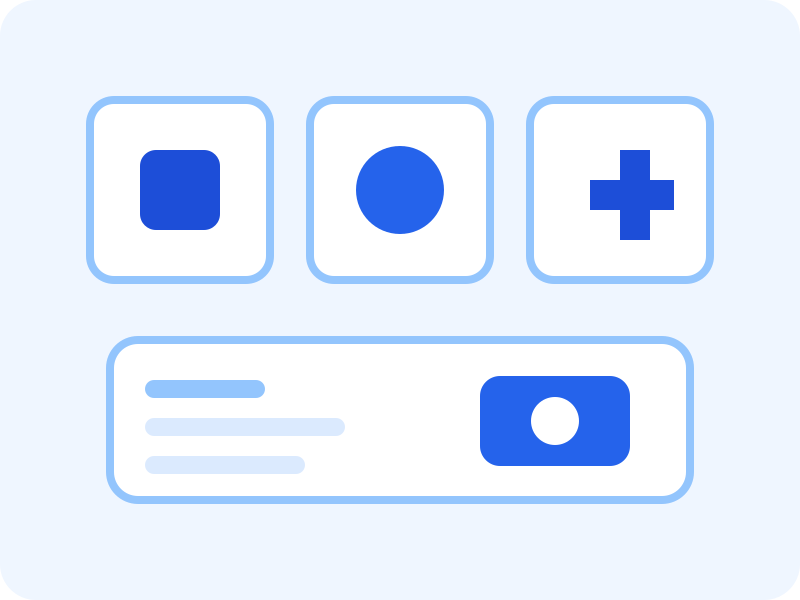

Annual Health Assessments
Routine consultations that help identify concerns early and support ongoing health monitoring.
PreventiveOur services
Browse our service categories and use the filter buttons to explore different care options. This page demonstrates dynamic content updates with JavaScript.

Interactive service filter
Use the buttons below to display different health support options. This demonstrates dynamic JavaScript interactivity in a professional prototype.
Routine consultations that help identify concerns early and support ongoing health monitoring.
PreventivePractical guidance focused on healthy habits, balanced routines, and achievable wellbeing goals.
WellnessConvenient online consultations for patients who prefer flexible remote support.
SupportGuidance and appointment preparation for routine preventive care and seasonal health needs.
PreventiveSupportive conversations that promote healthy coping strategies and self-care awareness.
WellnessStructured review appointments to help patients stay informed about their ongoing care pathway.
SupportFAQ accordion
This section demonstrates an interactive accordion using vanilla JavaScript.
This prototype suggests appointments are recommended so patients can receive timely support and reduce waiting times.
Yes. Telehealth is presented as a convenient option for selected consultations and follow-up care.
Yes. The contact page includes a validated enquiry form so visitors can request service information or assistance.